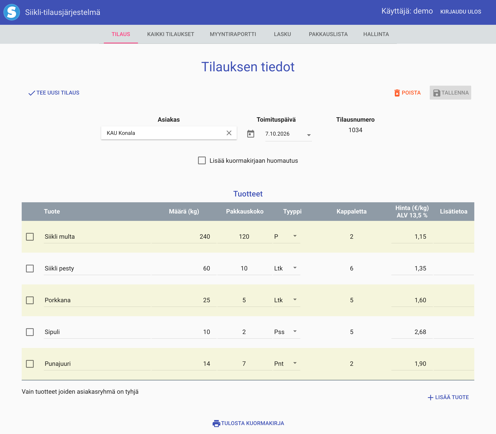
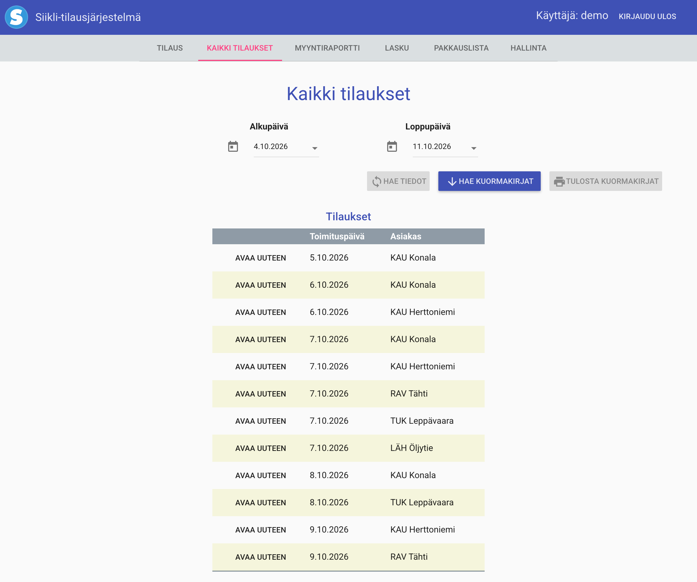
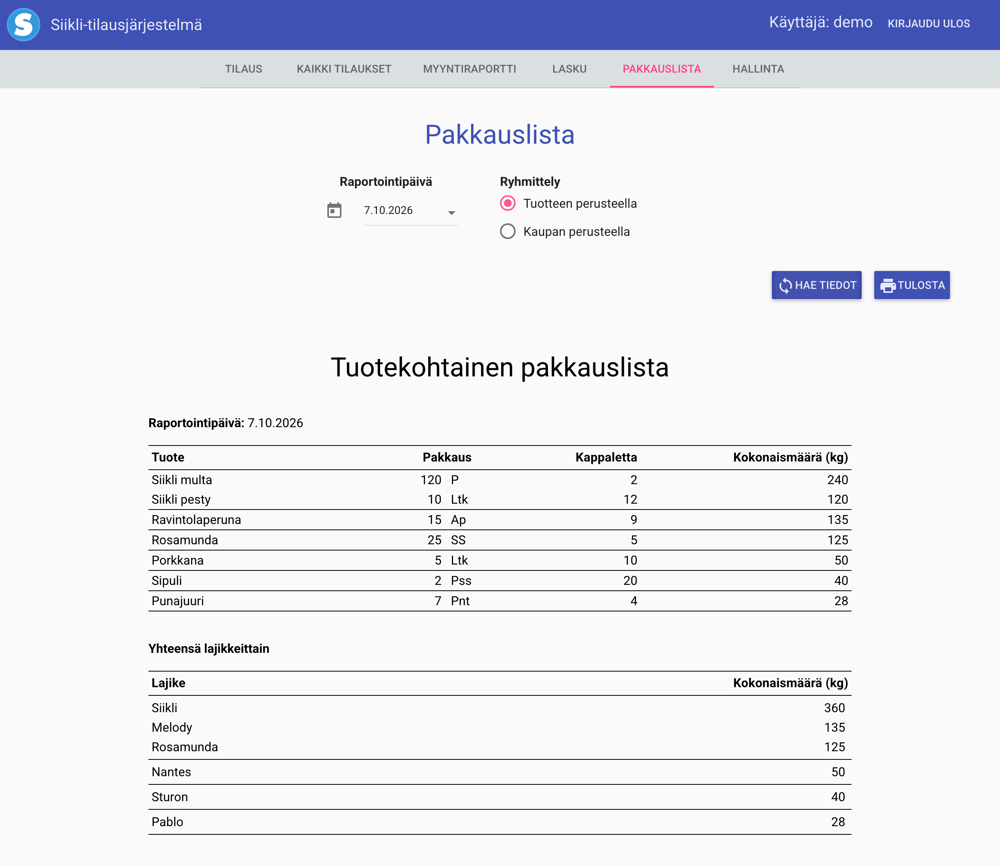
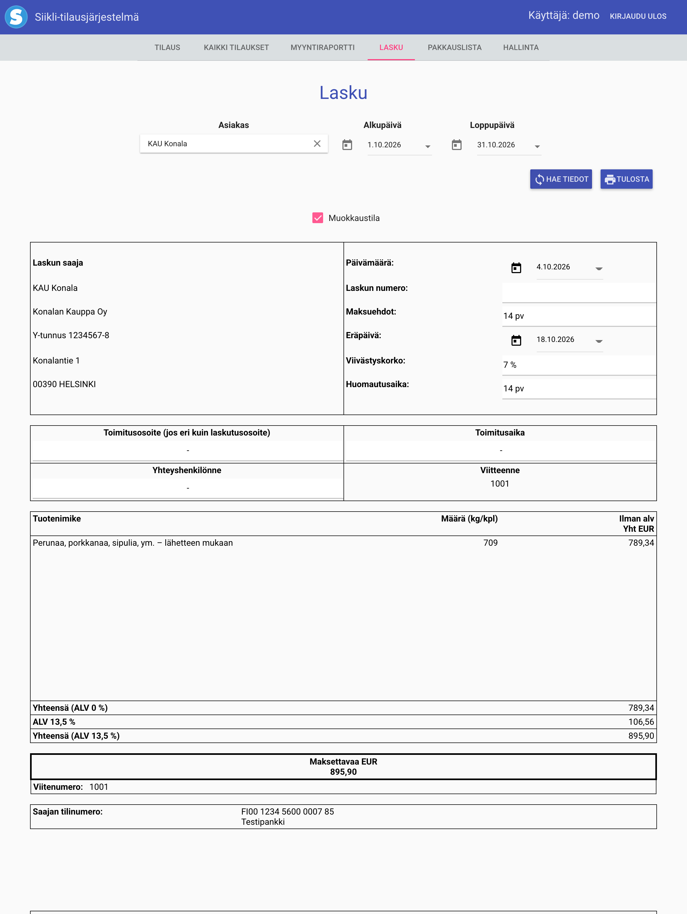
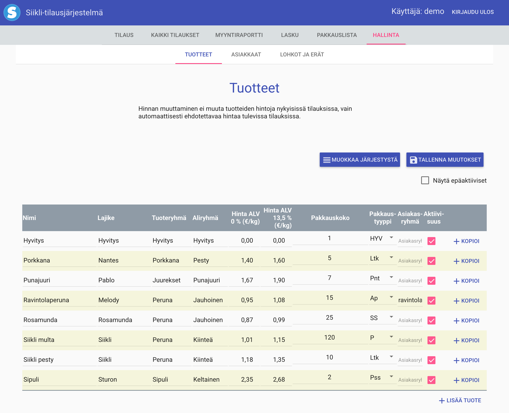

Myyntiraportit
Ajanjakson kaikki myynnit rivi riviltä Excel-tiedostona.
Tilaus-, laskutus- ja pakkauslistajärjestelmä, jonka tein suomalaiselle maatilalle ja tukkuliikkeelle ja jota ylläpidän edelleen.
Yrityksen toimisto kirjaa sillä tilaukset ja laskuttaa asiakkaat, ja pakkaamo pakkaa sen listojen mukaan joka päivän toimitukset. Yhdeksän vuoden päivittäisessä käytössä sen kautta on laskutettu 17 miljoonaa euroa.

Siikli on yksinkertainen järjestelmä, melkein nolostuttavan yksinkertainen. Se hoitaa tilaukset, pakkauslistat, laskut ja myyntiraportit eikä juuri muuta.
Halusin ajaa sen alas ja suosittelin siirtymistä oikeaan toiminnanohjausjärjestelmään. Asiakas halusi kuitenkin pitää Siiklin ja kertoi, miksi:
”Siikli on huomattavasti parempi meillä tuolla pakkaamolla kun saa yksinkertaiset listat/raportit.”
Kuvien tiedot ovat esimerkkidataa.

Yksi tilaus asiakasta ja toimituspäivää kohden. Hinnat tulevat tuotelistasta, ja niitä voi muuttaa tilauskohtaisesti. Pakkausten lukumäärä lasketaan tilatuista määristä.

Mitä varasto pakkaa kunakin toimituspäivänä, tuotteittain tai asiakkaittain ja tulostusvalmiina. Jokaisen toimituksen mukana lähtee kuormakirja.

Asiakkaan toimitukset miltä tahansa ajanjaksolta yhdelle laskulle. Laskussa on alv, asiakaskohtaiset hyvitykset ja liite, jossa jokainen toimitus on eritelty.

Hinnat verollisina ja verottomina, pakkauskoot ja -tyypit, asiakasryhmät omine tuotteineen sekä kaiken järjestys listoilla.
Ajanjakson kaikki myynnit rivi riviltä Excel-tiedostona.
Toimisto näkee kaiken. Varasto näkee vain pakkauslistat, ilman hintoja.